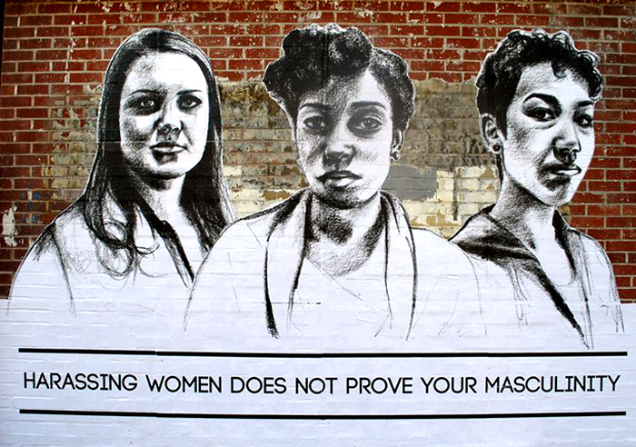
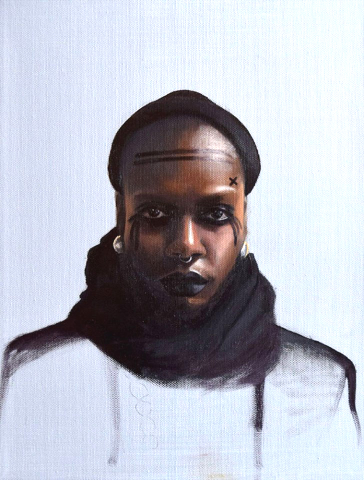
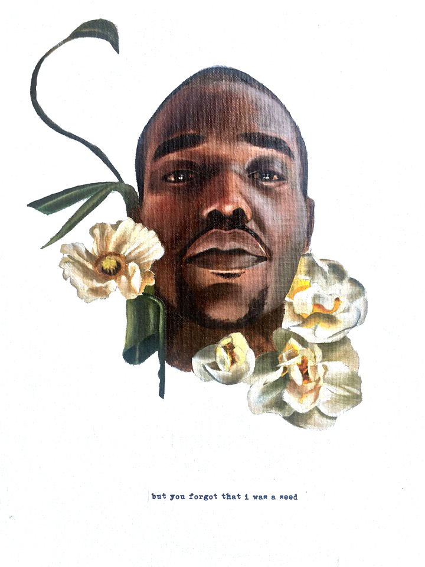

Q&A : TATYANA FAZLALIZDEH
Brooklyn artist, Tatyana Fazlalizadeh found her art’s calling when she splattered the truths of women across the streets of New York. Her prolific street art campaign, Stop Telling Women to Smile, has been seen on walls and buildings all over the globe, and translated into many languages with the common thread of empowerment and addressing the street harassment directed towards women. That in and of itself is something to smile about.
Aside from this social art movement she has created, Fazlalizadeh is also an oil painter specializing in portraits of people as a vehicle to tell their stories through realistic, and powerful imagery that breathes life and energy into the canvas. Often focusing on a socio-political context and rooted in community activism, this young rising artist has much to say through her work for whomever will hear it, when they need to be touched by art that has deep value and meaning within its compelling execution.
AMFM: Why did you feel that street art was the medium for your stop telling women to smile project? How was the fact that it is street art helped the project evolve?
TATYANA FAZLALIZDEH: The site of the work and the content of the work were among the same idea. I never considered executing Stop Telling Women to Smile in an environment other than the street. To address street harassment, it needed to be outdoors. The idea was to open up the conversation on street harassment right where it happens - not in the gallery, or online, but in the street. What I didn't realize was that the street and the internet overlap in many contexts. I was not expecting for the project to become popular so quickly because I never accounted for an online presence when beginning the work. The internet helped the project evolve very quickly, because it placed it in front of the eyes of people not just passing it in the street but, across the world. And that forced me to consider the experiences of women not just in Brooklyn, but women from various communities and cities.AMFM: Before your Stop Telling Women to Smile project, was activism a conscious part of your work? You like to do work with a socio-political context, why are you drawn to these sorts of narratives, especially those surrounding gender and race?
FAZLALIZADEH: The intent behind all of my work is to look at issues of race and gender in a way that allows those from an oppressed group a space to tell their story. I think STWTS does this in a very simple and pointed way while the rest of my work, my painting, is not as direct. I'm always looking at different ways to express an idea, a narrative, or a reaction to an issue that's grown out of the constructs of race and gender. These are the things that have had everyday impacts on my own life - being black and being a woman. So, as a black woman I'm always looking at the larger events and issues hitting these communities.

AMFM: A lot of your work outside of the project deals with human subjects, portraiture and this idea of the human experience and struggle, especially those voices left behind and not heard. What is it about people and their stories that fascinate you? What has been the most interesting story you have had the privilege to tell through your art?
FAZLALIZADEH: I paint people and their stories for a few reasons. I often find some element of myself in other people and I like to think that the viewer of my work will too. There's also, of course, the very real and important aspects of representation and visibility. I also think it's a good idea to listen to people who come from different backgrounds than you.I don't know if there's one story that I've felt most privileged to tell. I recently interviewed a woman in Brooklyn about her experiences being trans and black and moving throughout the public world. Hearing the complexities of what she experiences and how those things affect her mentally, emotionally - it's not just important to hear her story but to protect her. She passed along the sentiment that it's not really enough to mourn trans women after they've been murdered but, to acknowledge and support them now, while they are here. I guess this is what I'm trying to do with my work - to highlight the everyday experiences of women as being important.
AMFM: Your mother is also an artist, so you were exposed to art at a young age, was art something you feel you were meant to do? Has it always been a part of your existence?
FAZLALIZADEH: I didn't grow up as one of those kids that was always painting and drawing. I didn't really start drawing until college, and I never painted with oil paint, my primary medium, until college. So, no, I didn't always feel like it was something I was meant to do. Even after realizing that I had technical talent for painting and drawing, it was still important for me to figure out the motivation behind being an artist. What's my intent? To paint pretty pictures or to paint pretty pictures that say something? And even then, what am I really saying in my work? Is that even important? This is stuff that arose in college and after. Even today, still.
AMFM: You also said you've never had a 9-5 and have been freelancing since college. In some alternate universe say you had a 9-5 what do you think you would be doing?
FAZLALIZADEH: As my career keeps going, I don't rule out the idea of being in a 9-5 type space. I wouldn't mind teaching at the college level. I can also see myself working within an art or design group or organization. I enjoy working with other people - collaborating with other creatives, teaching kids, exchanging ideas with artists in a studio space. If it made sense, I'd totally be open to working somewhere that had an inspiring and creative atmosphere.
AMFM : You spoke before about the different subdivisions of the art world and New York in particular and about how you feel you'll never be an NYC art darling, what do you mean by that sentiment? What kind of artist would you say that you are? Who do you make art for?FAZLALIZADEH: I'm not making work with the intent to sell to collectors or be shown in a museum. I think my work absolutely could and should be shown in spaces like that, but that's not the absolute goal. The goal is to make work that represents a movement, a people, a time, work that can be useful to people, and work that tells stories. I work as a muralist because I think that public art offers accessibility and ownership of art to communities. I work as a freelance illustrator because I enjoy the challenge of translating a text into an image. I work as an oil painter because oil paintings are beautiful and traditional. I work in the streets because I'm taking back physical and ideological space as a black woman. I'm just making work. I trust that it makes it way in front of the eyes of those who need to see it - whether that's a construction worker or a curator.
FOR MORE FROM TATAYANA FAZLALIZADEH:
STOP TELLING WOMEN TO SMILE / WEBSITE